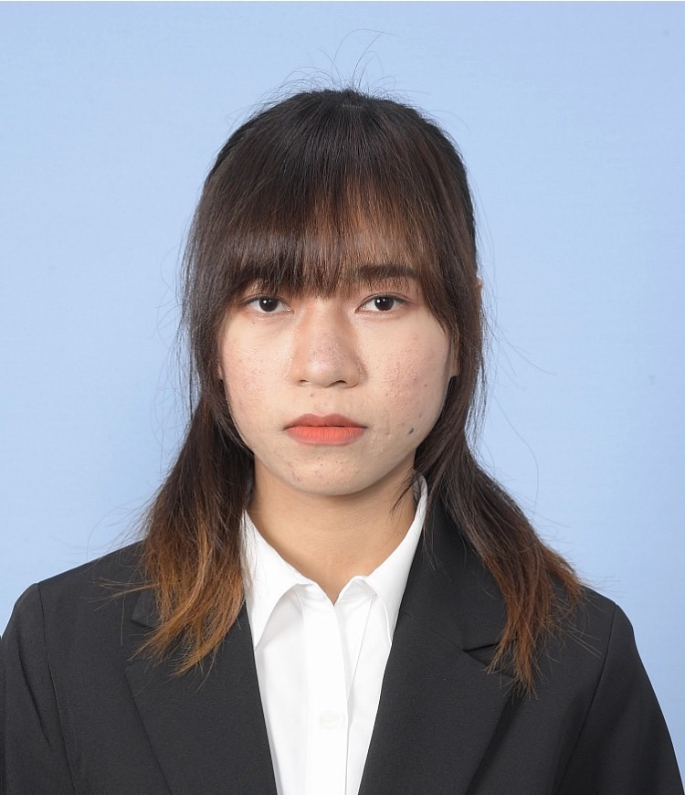

CHHORN CHAK RIYA

Summary
Curious and Resilient Thinker | Independent& Compassionate
I am a hardworking, dedicated, introspective individual with a strong passion for knowledge, creativity, and self-improvment.
While I value meaningful connections, I find peace in solitude and am known for my calm, straightforward approach.
As a INFJ-T, I blend empathy with focus, prioritizing my family and future goals while balancing work and studies in Japan.
Education
- IT • Web Department - Chuo Computer&Communication College (2024 - 2026)
Work Experience
Newspaper Delivery - Yomiuri Shinbun
April 2022 - Present
- Newspaper Delivery Man
- Collect money
Skills
- HTML
- CSS
- JavaScript
- Figma
- Python
Awards and Certifications
- ibut - Internet Basic User Test
- Japanese Language Proficien Test N2
- Diligent Attendance Award (2024)
Other